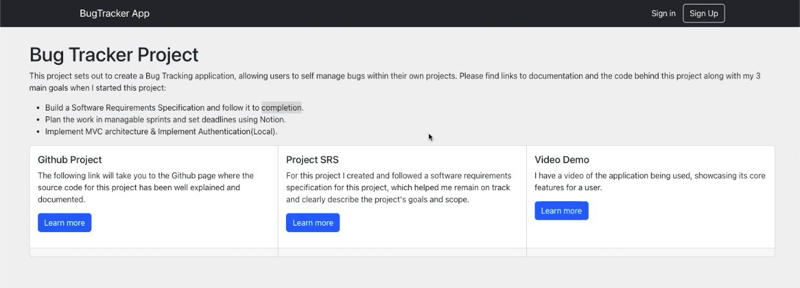
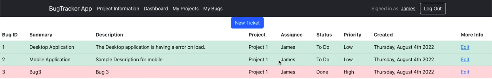

Bug Tracker Project
About
A project management tool that's intended for use as an internal tool within an organization built mainly aimed to help developers and dev managers. The application's core functionality includes managing bugs, and projects, and allowing the users to manage, edit & complete tasks/bugs within the system. There will be authentication using local sessions for the project along with a DB connection to store the data..
Stack
- JavaScript
- HTML
- CSS
- ReactJS
- Redux
- Ruby
- Sinatra
- Ruby on Rails
- PostgreSQL
- SQL
- Heroku
- Netlify
GitHub Links
Github Frontend Github backendVideo Walkthrough
Watch VideoLive
Live LinkProject Details
I want to cover all CRUD functions within this project while working in ES6 using Redux. The long-term vision for this tool is to connect it to a chrome extension that records console errors and pushes data to DB while expanding the functionality to allow for Reporting and Administrative functionality within the system.
Web Stack and Explanation
Built the project using ReactJS for the frontend and Ruby on Rails on the backend. The backend handles authentication using local cookie sessions, CRUD actions for bugs, projects, and users. For the database I used PostgreSQL. Finally, I deployed the backend to Heroku and frontend to Netlify. Problems and Thought Process. The main goal of the project was to make it scalable and flexible enough so that it would support future changes and build a software requirements specification and follow it to completion.
Problems and Thought Process
Session & Cookies Authentication data was persisting correctly in development however in production the sesion data wasn't persisting. The reason for this was related to Rails so I implemented The main goal of the project was to make it scalable and flexible enough so that it would support future partners and integrate with existing fintech platforms to monetize the user base..